Compte rendus de TP et procédures réalisés en cours de BTS SIO SISR — réseau, sécurité, systèmes et cybersécurité
Toutes les procédures
Packet Tracer c'est le simulateur réseau de Cisco. On l'utilise pour monter des topologies réseau, configurer des routeurs et des switches en CLI, et tester la connectivité entre machines — sans avoir de vrai matériel.
Dans ce TP, j'ai mis en place un réseau avec plusieurs sous-réseaux, configuré le routage statique et vérifié la connectivité de bout en bout avec des ping.
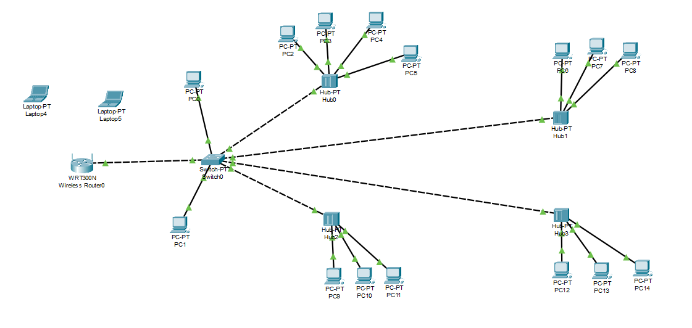
Vue d'ensemble de la topologie dans Packet Tracer
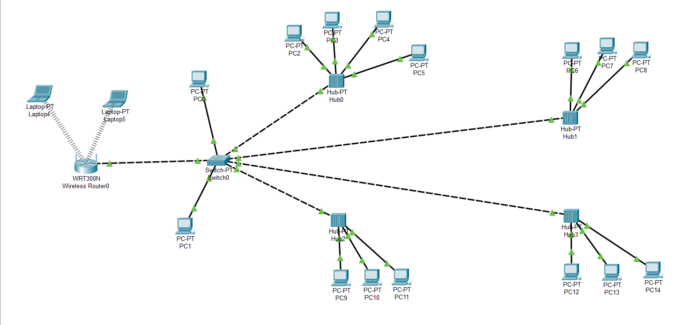
Topologie avec plusieurs sous-réseaux interconnectés
La configuration d'une interface se fait en mode privilégié puis en mode de configuration d'interface. Exemple pour affecter une IP sur fa0/0 :
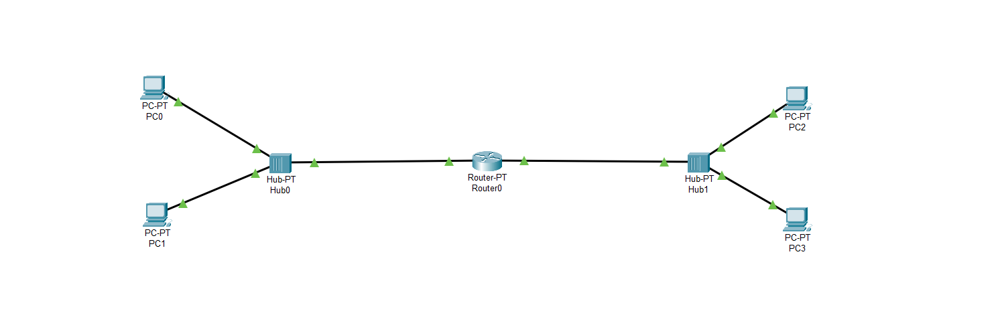
Configuration d'une interface en CLI
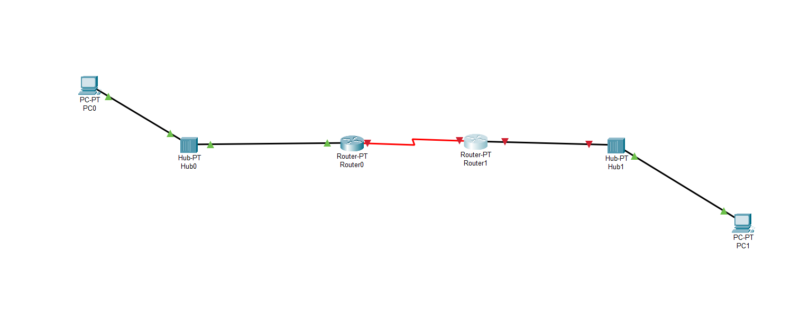
Ajout d'une route statique vers un autre réseau
Pour que deux sous-réseaux puissent communiquer via un routeur, il faut soit du routage dynamique, soit des routes statiques. Dans ce TP on a utilisé des routes statiques — c'est plus simple à comprendre pour commencer.
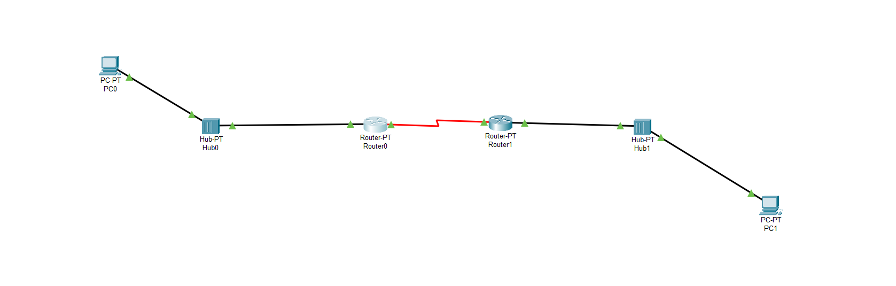
Test de connectivité entre deux sous-réseaux après configuration du routage
show ip route affiche la table de routage. Les routes en S sont statiques, celles en C sont directement connectées. C'est utile pour déboguer quand un ping ne passe pas.
Les VLANs (Virtual LAN) permettent de segmenter un réseau physique en plusieurs réseaux logiques isolés. Même branché sur le même switch, un poste en VLAN 10 ne peut pas communiquer directement avec un poste en VLAN 20.
Dans ce TP j'ai configuré 3 switches avec 2 VLANs : VLAN 10 pour les postes PC1 à PC3, et VLAN 20 pour les postes PC3 à PC5. Les liens entre switches sont configurés en mode trunk pour laisser passer les deux VLANs.
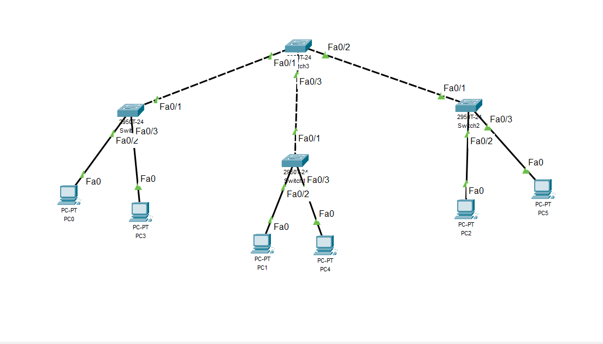
Topologie complète — 3 switches interconnectés avec 2 VLANs
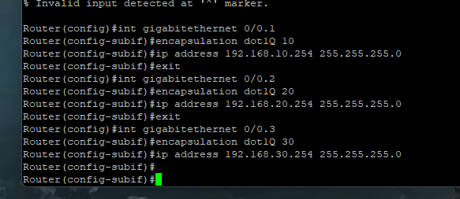
Plan d'adressage — VLAN 10 (192.168.10.x) et VLAN 20 (192.168.20.x)
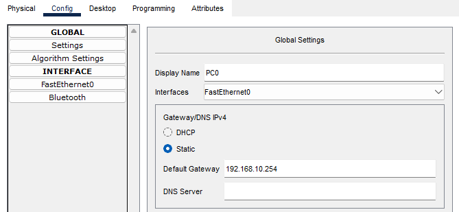
Configuration de l'interface VLAN 10 avec l'IP de management
Après la configuration, un ping entre deux postes du même VLAN doit fonctionner. Un ping vers un poste d'un autre VLAN doit échouer — c'est ce qu'on attend. Pour que deux VLANs puissent communiquer, il faut un routeur ou un switch L3.
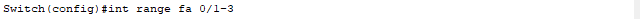
Ping réussi entre deux postes du même VLAN — isolation vérifiée
show vlan brief permet de vérifier quels ports appartiennent à quel VLAN.
pfSense est un pare-feu open-source basé sur FreeBSD. Dans mon infrastructure (Laniakea), il fait le lien entre le WAN (réseau de l'école) et le LAN interne (192.168.10.0/24). Il gère aussi les VLANs pour séparer le réseau filaire, le WiFi d'entreprise et le WiFi invité.
La configuration des VLANs dans pfSense passe par l'interface web. On crée les VLANs sur l'interface LAN, on leur assigne une interface pfSense, et on configure les règles de filtrage pour définir ce qui peut passer ou non.
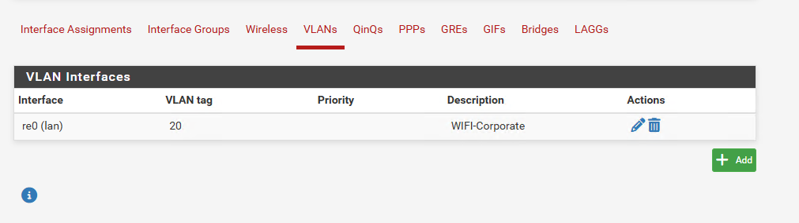
Liste des interfaces VLAN configurées dans pfSense
Depuis l'interface web, aller dans Interfaces → Assignments → VLANs. Renseigner l'interface parente (le LAN physique), le tag VLAN et une description. Une fois créé, il faut assigner le VLAN à une interface pfSense et lui donner une IP (ex. 192.168.20.1/24).
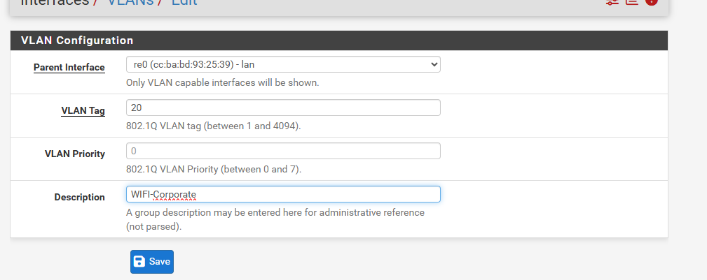
Création d'un VLAN — tag 10, interface LAN, description "LAN Natif"
Chaque interface VLAN a ses propres règles de pare-feu. Par défaut tout est bloqué — il faut créer des règles explicites pour autoriser le trafic. J'ai créé une règle pour autoriser le VLAN WiFi Corporate à accéder à internet, tout en bloquant l'accès aux autres VLANs.
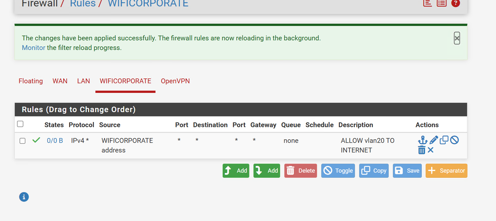
Règle de filtrage — autorisation du VLAN WiFi Corporate vers internet
GLPI (Gestionnaire Libre de Parc Informatique) est un outil open-source pour gérer le parc informatique et les demandes de support. Il permet de centraliser les tickets d'incident, l'inventaire des équipements, et les contrats.
Dans mon infrastructure, GLPI est déployé sur la VM Titan (192.168.10.6). L'installation se fait via un assistant web qui configure la connexion à la base de données MySQL et crée les tables.
Après avoir déposé les fichiers GLPI dans le répertoire web du serveur, l'assistant d'installation guide la configuration de la BDD. Il faut renseigner le host MySQL, le nom de la base, et les identifiants.
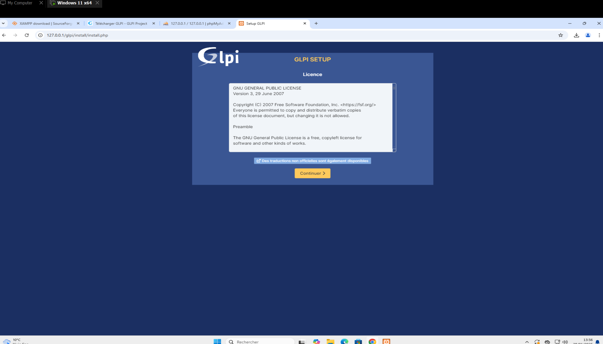
Étape 1 de l'installation — configuration de la connexion à la base MySQL
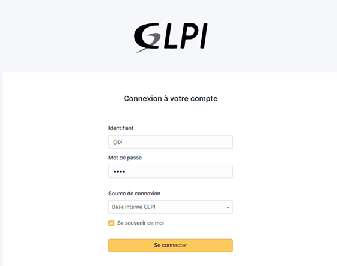
Page de connexion GLPI après installation
Une fois connecté, le tableau de bord donne une vue d'ensemble des tickets en cours, des équipements, et des statistiques. Un technicien peut créer, prendre en charge et résoudre des tickets directement depuis l'interface.
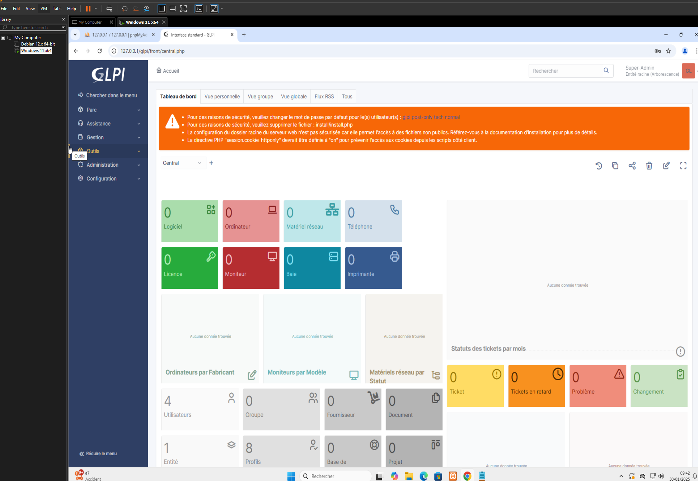
Tableau de bord GLPI — vue d'ensemble des tickets et du parc
install/ pour des raisons de sécurité. GLPI affiche un avertissement si ce dossier est encore présent.
Veeam Agent for Windows est un outil de sauvegarde qui permet de sauvegarder un poste Windows sur un disque local, un partage réseau, ou un dépôt Veeam. Il supporte la sauvegarde complète, incrémentale, et la restauration fichier par fichier ou restauration complète du volume.
Dans ce TP, j'ai configuré un job de sauvegarde en mode "Entire computer" vers un partage réseau, puis j'ai testé la restauration.
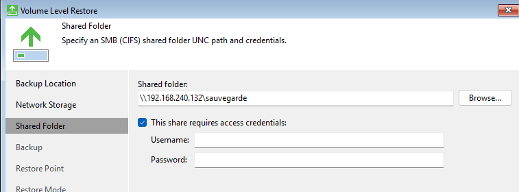
Étape 1 — Nommer le job de sauvegarde
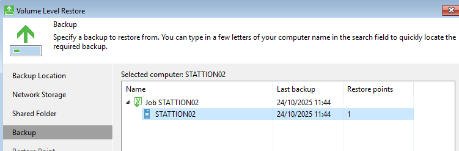
Étape 2 — Mode "Entire computer" (sauvegarde complète)
Le mode "Entire computer" sauvegarde tout le système, y compris l'OS et les données. C'est le plus pratique pour une restauration bare metal (remplacer un disque dur en panne par exemple). Le mode "Volume level backup" permet de choisir des volumes spécifiques.
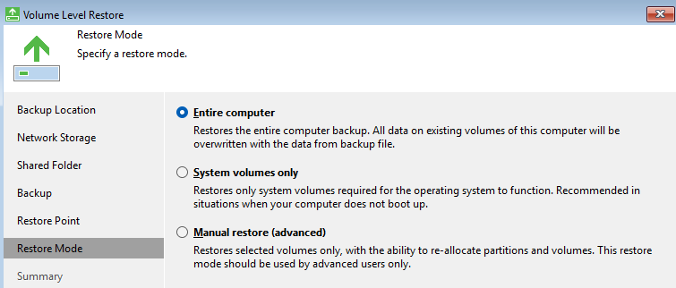
Étape 3 — Destination vers un partage réseau
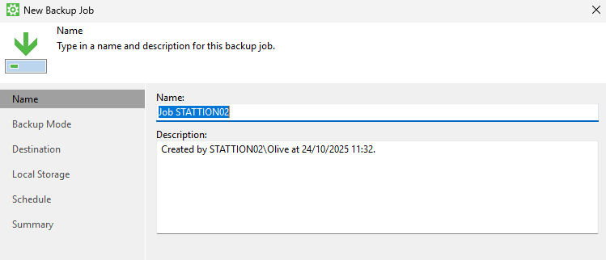
Étape 4 — Planification (quotidienne, hebdomadaire...)
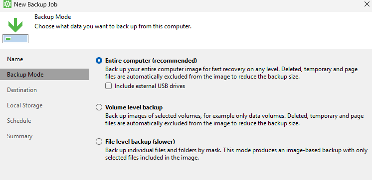
Récapitulatif du job créé — mode, destination, planification
La restauration se lance depuis Veeam Agent → clic droit sur le job → Restore. On sélectionne le point de restauration (date/heure), puis le mode de restauration : volume entier, fichiers individuels, ou restauration bare metal depuis le media de récupération.
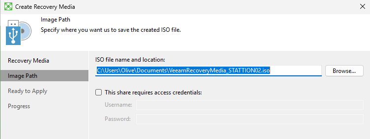
Sélection du backup source pour la restauration de volume
Ce TP couvre la prise en main de Debian en ligne de commande : navigation dans l'arborescence, gestion des fichiers et dossiers, droits d'accès, et manipulation de texte. L'environnement utilisé est une VM Debian dans VirtualBox.
Les commandes de base pour se déplacer et gérer les fichiers sous Linux :
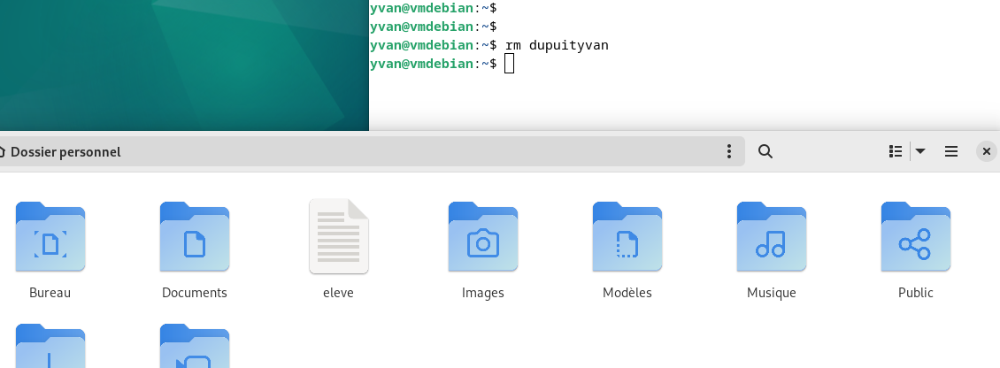
ls -la — affichage des droits et propriétaires
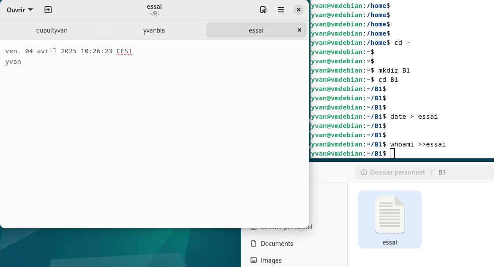
ls -l — droits du fichier essai, propriétaire yvan
Linux intègre des outils puissants pour traiter des fichiers texte directement en ligne de commande. grep permet de rechercher une chaîne dans un fichier, cat d'afficher son contenu, et diff de comparer deux fichiers.
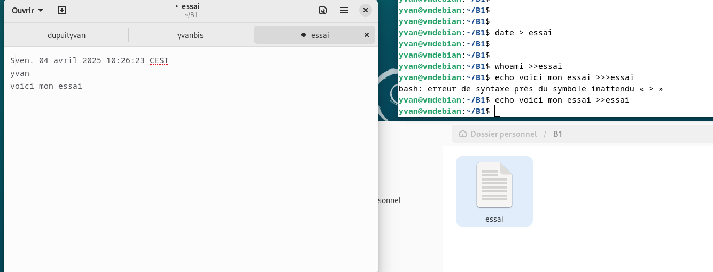
cat et création de fichiers en terminal Debian
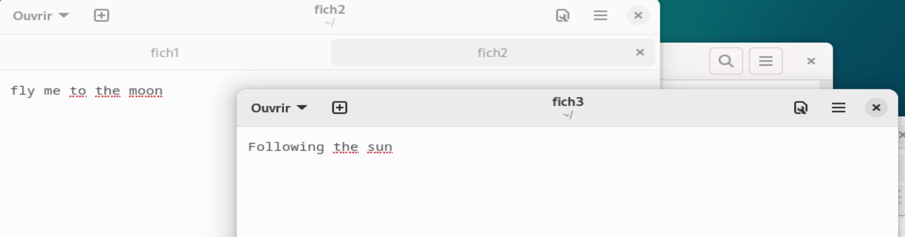
grep — recherche d'une chaîne dans un fichier
chmod permet de les modifier. Par exemple chmod 644 fichier.txt donne lecture+écriture au propriétaire, lecture seule aux autres.
Wireshark est un analyseur de protocoles réseau. Il capture tout le trafic qui passe sur une interface réseau et permet de l'analyser trame par trame. C'est un outil indispensable pour comprendre ce qui se passe sur un réseau et pour déboguer des problèmes de connexion.
Dans ce TP, j'ai capturé des échanges HTTP et analysé les trames pour identifier les couches du modèle OSI, les adresses IP et MAC, et les ports utilisés.
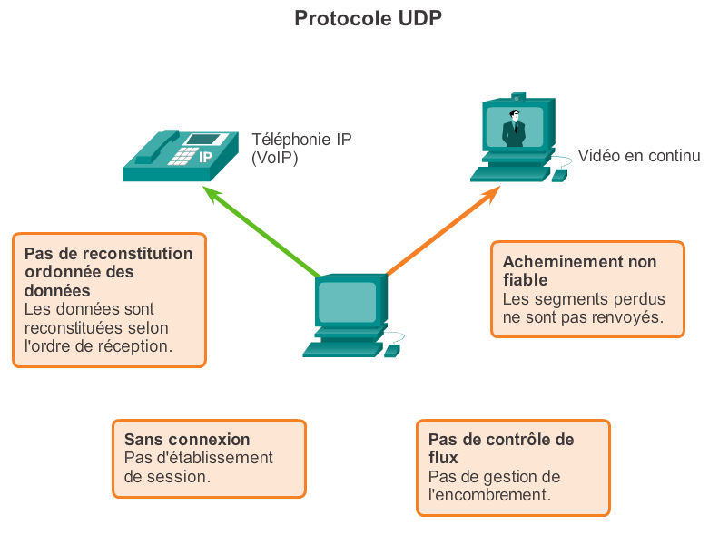
Interface Wireshark — liste des paquets capturés avec les colonnes Source, Destination, Protocol, Info
Une requête HTTP implique plusieurs échanges : la résolution DNS, l'établissement de la connexion TCP (handshake en 3 étapes), puis l'envoi de la requête GET et la réception de la réponse. Dans Wireshark, on peut filtrer par protocole pour isoler ce qu'on veut regarder.
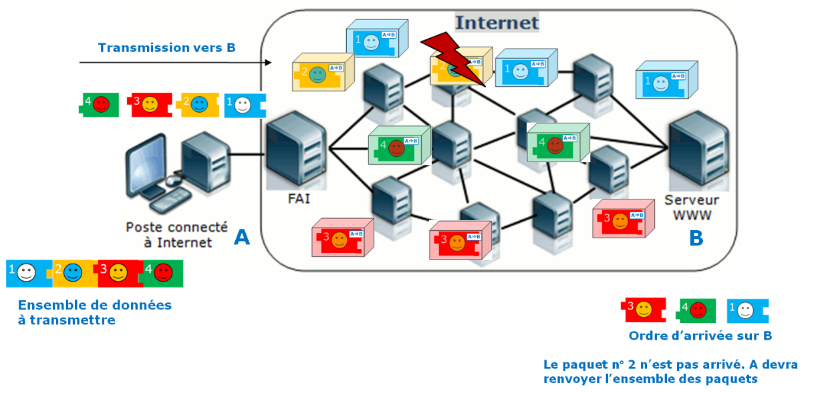
Capture HTTP — échange TCP avec les détails du paquet déplié
En parallèle des captures Wireshark, j'ai utilisé des commandes ping pour générer du trafic ICMP et vérifier la connectivité. Les paquets ICMP apparaissent dans Wireshark et permettent de vérifier les temps de réponse.
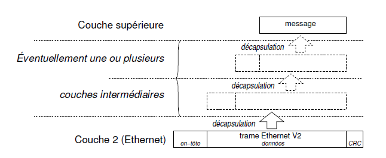
Ping vers un serveur — les paquets ICMP sont visibles dans Wireshark
http pour n'afficher que le trafic HTTP, tcp.port == 80 pour le port 80, ip.addr == 192.168.1.1 pour filtrer une IP. Le filtre tcp.flags.syn == 1 permet d'isoler les connexions TCP.
GPG (GNU Privacy Guard) est un outil de chiffrement qui implémente le standard OpenPGP. Il permet de chiffrer des fichiers avec une clé publique/privée (chiffrement asymétrique) ou avec une passphrase (chiffrement symétrique).
Dans ce TP j'ai généré une paire de clés GPG, chiffré un fichier, et testé le déchiffrement. J'ai aussi exporté la clé publique pour la partager.
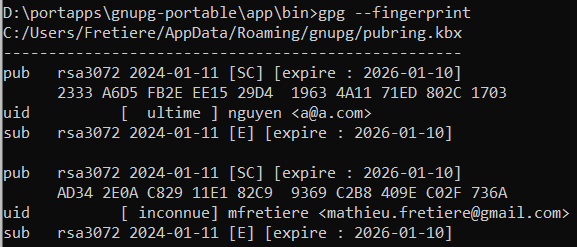
Principe du chiffrement asymétrique — clé publique pour chiffrer, clé privée pour déchiffrer
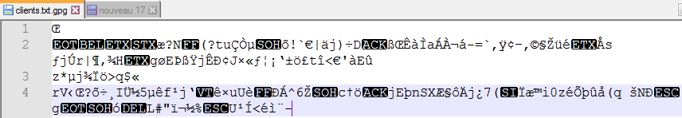
Génération d'une clé GPG — saisie du nom et de l'email
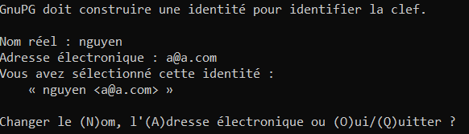
Informations de la clé générée — RSA 3072 bits, empreinte unique
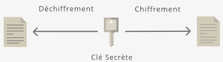
Fichier original + version chiffrée (.gpg) + export ASCII (.asc)
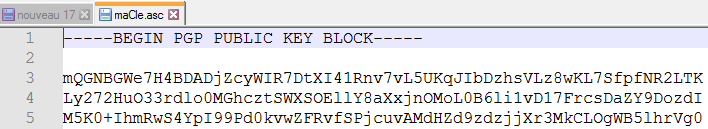
Pinentry — saisie de la passphrase pour déchiffrer
.asc est une version en ASCII armor de la clé ou du message chiffré — utile pour partager par email ou copier-coller. L'option --armor produit ce format. Sans cette option, GPG génère un binaire .gpg.
L'ajout de rôles sous Windows Server se fait via le Gestionnaire de serveur. Un rôle c'est une fonctionnalité serveur : AD DS (Active Directory), DNS, DHCP, IIS... Chaque rôle a ses propres prérequis et son assistant de configuration post-installation.
Ce TP montre la procédure complète d'ajout de rôles, du lancement de l'assistant jusqu'à la vérification post-installation.
Depuis le Gestionnaire de serveur, aller dans Gérer → Ajouter des rôles et fonctionnalités. L'assistant s'ouvre et guide les différentes étapes.
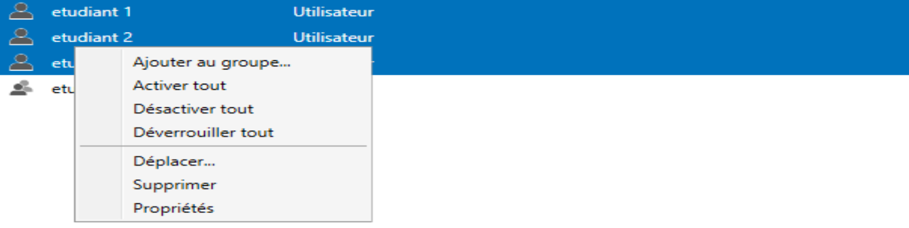
Gestionnaire de serveur — accès au menu d'ajout de rôles
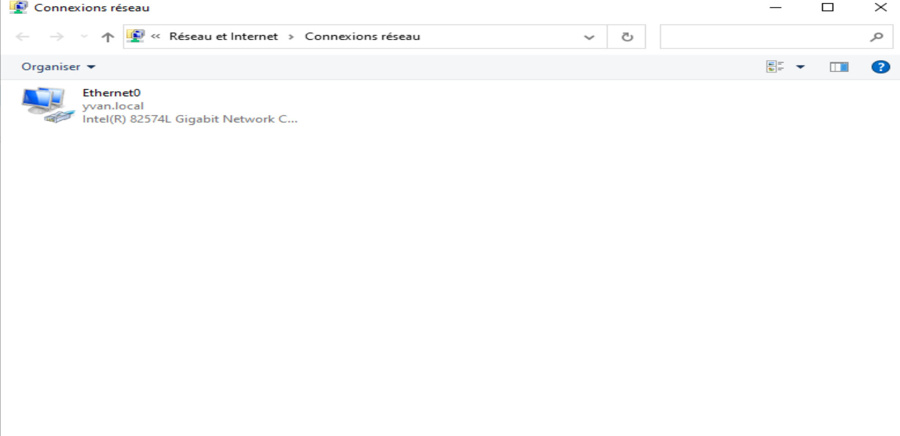
Assistant ajout de rôle — sélection d'AD DS
Après l'installation d'un rôle, une notification apparaît dans le Gestionnaire de serveur pour lancer la configuration post-installation. Pour AD DS, ça consiste à promouvoir le serveur en contrôleur de domaine. Pour DHCP, c'est l'autorisation dans l'AD.
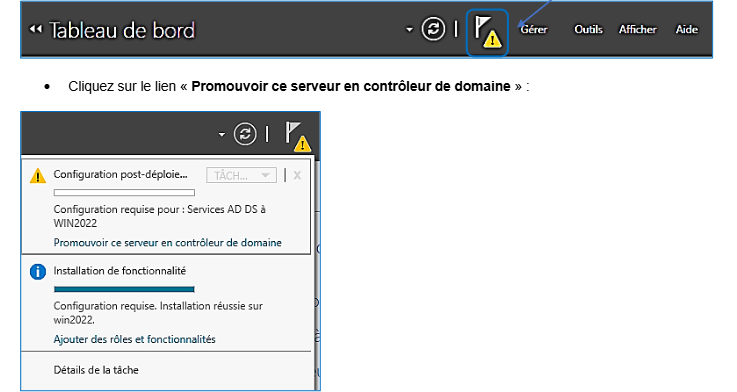
Configuration AD DS — assistant de promotion en contrôleur de domaine
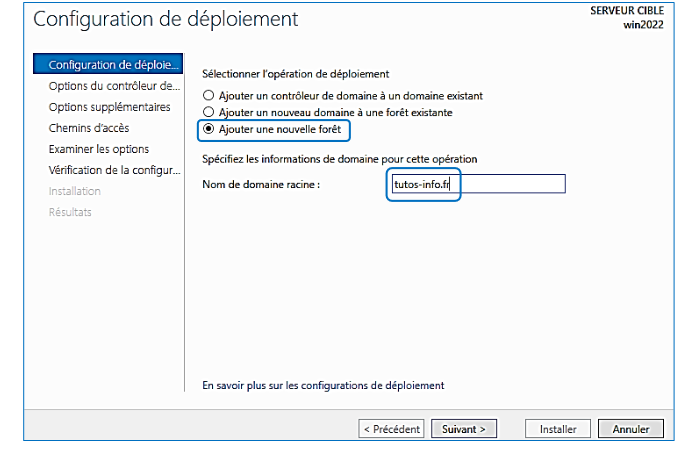
Vérification prérequis avant installation — liste des checks